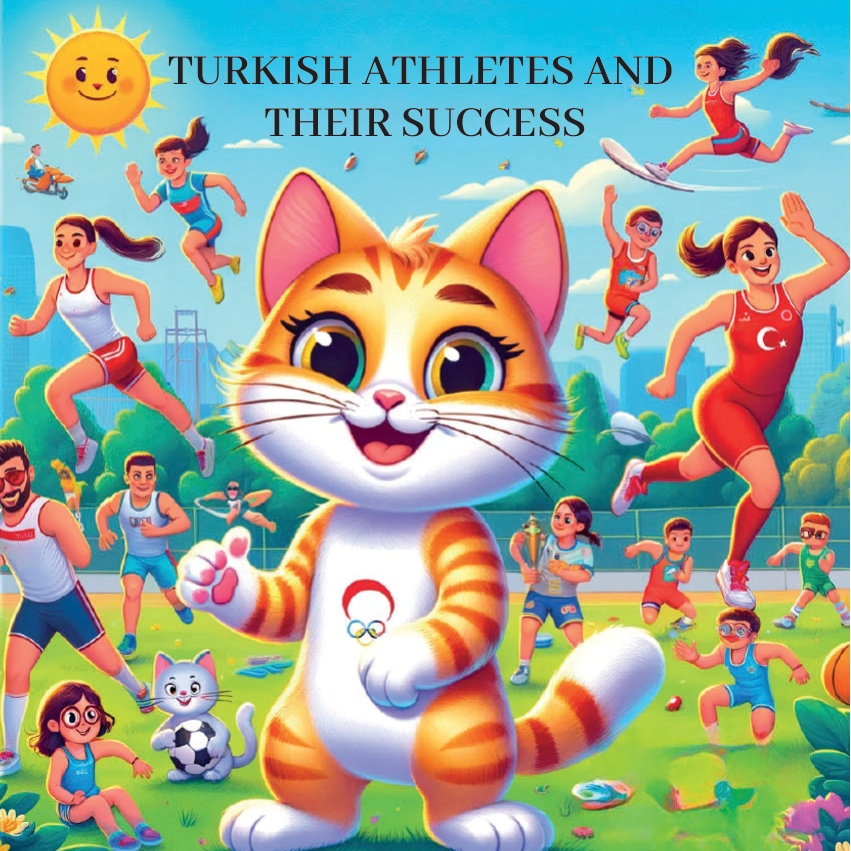
1

2

3
Карамел, любопитното котенце,
реши да научи за
чудесните спортисти на Türkiye
и техните невероятни постижения
на Олимпиадите.
Тя тръгна на ново приключение, за да срещне
тези вдъхновяващи спортни герои.
4
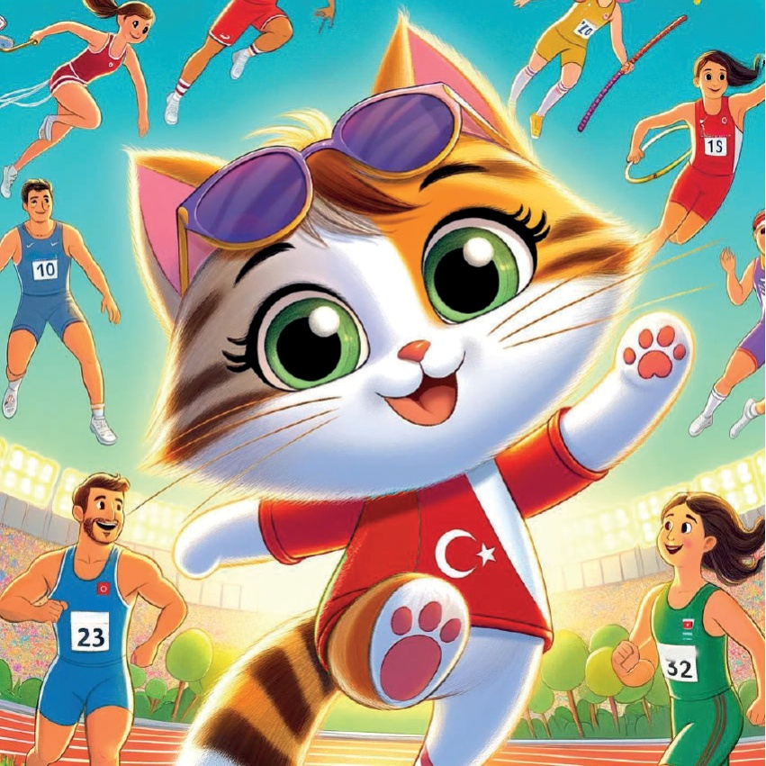
5
Найм Сюлейманоğlu - Вдигане на тежести
Първата спирка на Карамел беше да срещне
Найм Сюлейманоğlu,
легендарният щансман, известен като
"Херкулес в джоба".
Тя го наблюдаваше с възхищение как той вдига невероятно
тежки тежести с лекота
и си спомни за неговите три олимпийски златни медала.
6
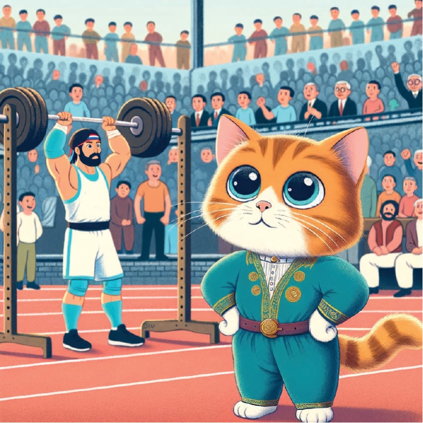
7
Халил Мутлу – Вдигане на тежести
След това Карамел пътува до Халил Мутлу,
друг легендарен вдигач на тежести с
три олимпийски златни медала.
Тя го наблюдава как демонстрира неговата изключителна
сила и решителност.
8
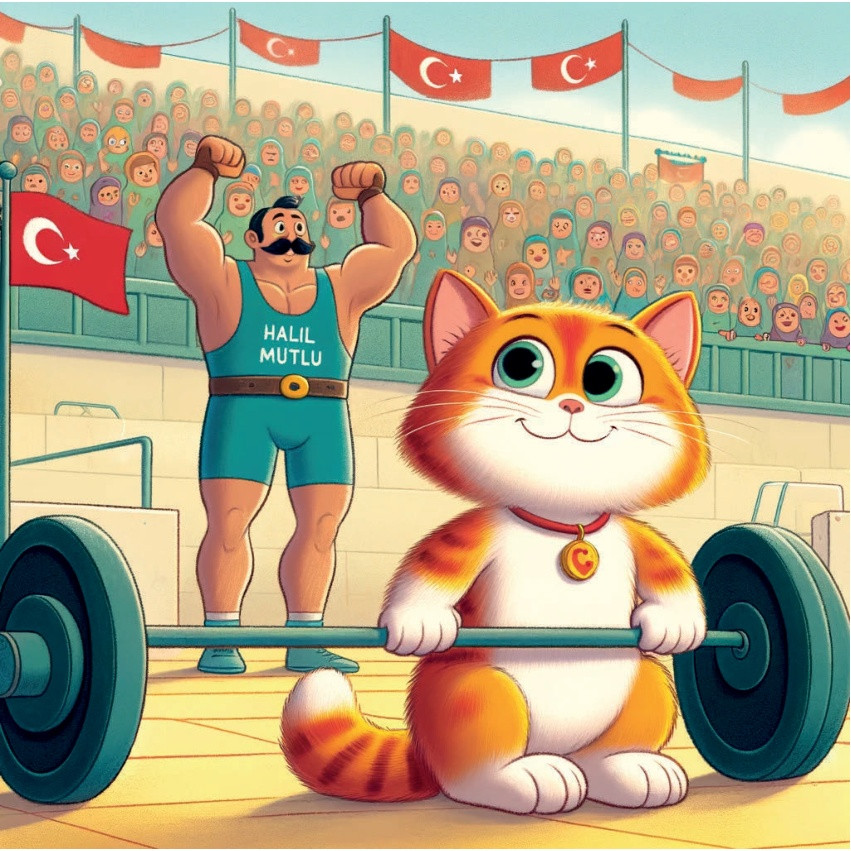
9
Ясемин Адар - Борба
В следващото си приключение,
Карамел срещна Ясемин Адар,
пионерка в борбата, която спечели
бронзов медал на Олимпиадата в Токио
2020 г.
Карамел подкрепи, докато
бяше свидетел на борба.
10
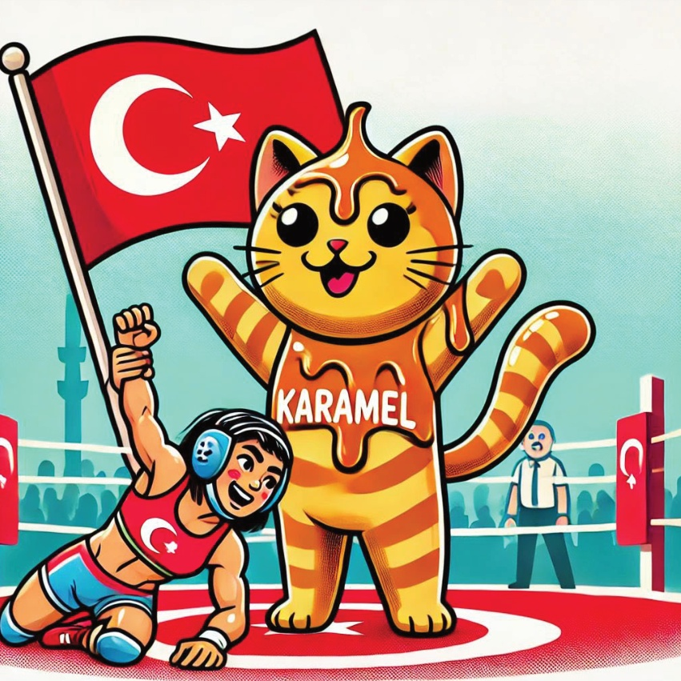
11
Таха Акгюл - Борба
Карамел посети Таха Акгюл,
талантлив борец, който спечели златен медал
на Олимпиадата в Рио 2016 г.
Тя се възхити на неговата сила
и умения, докато той се състезаваше.
12
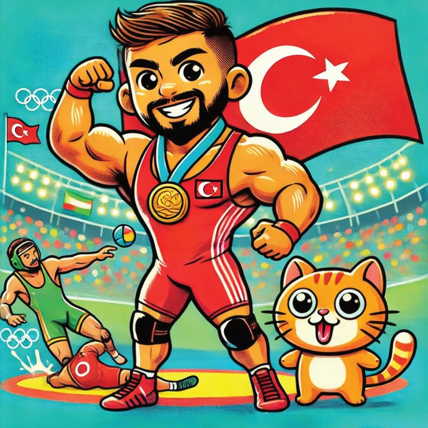
13
Бузєназ Сюрменелі - Бокс
На следващата си спирка,
Карамел срещна Бузєназ Сюрменелі,
боксьорка, която спечели златен медал
на Олимпиадата в Токио 2020 г.
Карамел беше вдъхновена от нейната решителност
и сила.
14
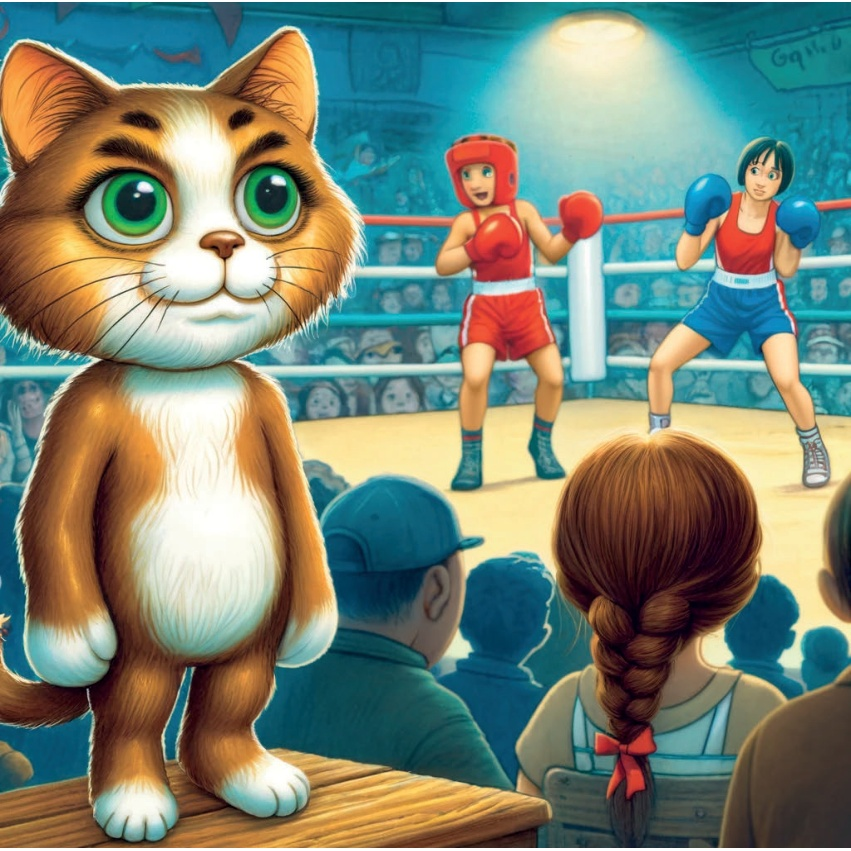
15
Мете Газоз - Стрелба с лък
Карамел срещна Мете Газоз,
стрелец, който спечели златен медал на
Олимпийските игри в Токио 2020 г.
Тя го наблюдаваше с възхищение, докато той
попадаше в целта с невероятна прецизност.
16
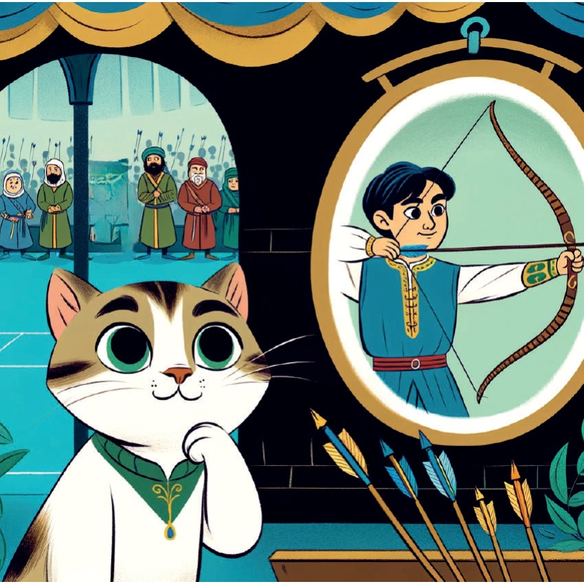
17
Нур Татар - Тхеквондо
Карамел се срещна и с Нур Татар,
успешен тхеквондо спортен атлет
с две олимпийски медали,
сребро от Лондон 2012
и бронз от Рио 2016.
Карамел беше впечатлена
от нейната ловкост и умения.
18
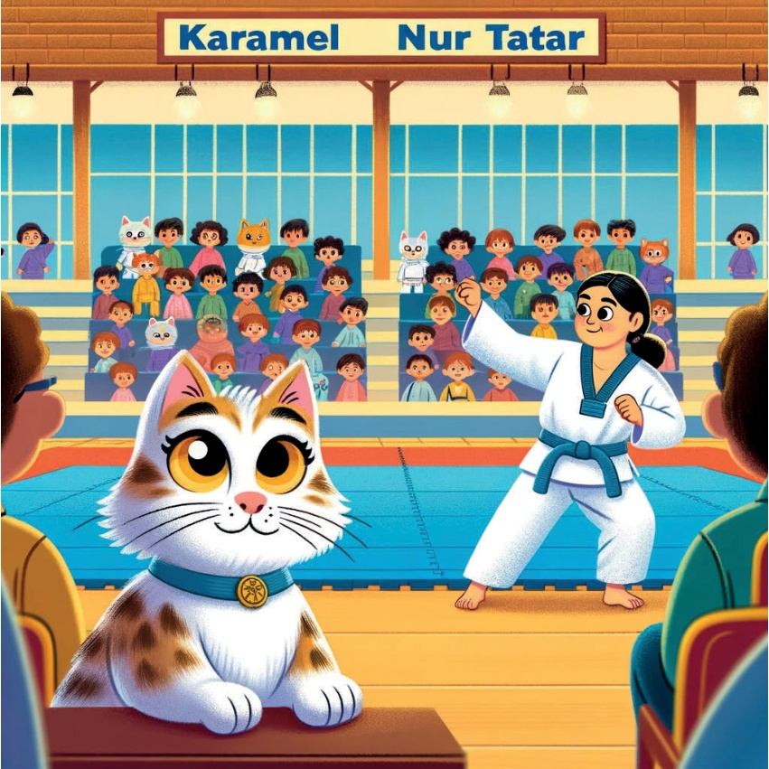
19
Сърцето й изпълнено с вдъхновение,
Карамел осъзна колко талантливи
и отдадени са турските олимпийски спортисти.
Тя се прибра у дома, мечтаейки за следващото
си приключение и готова да опита нови спортове сама.
20
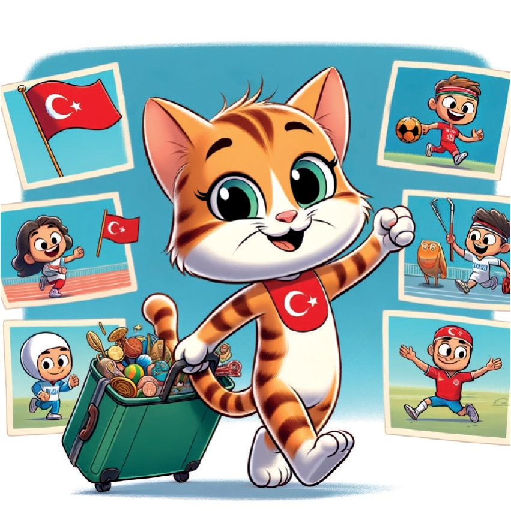
21
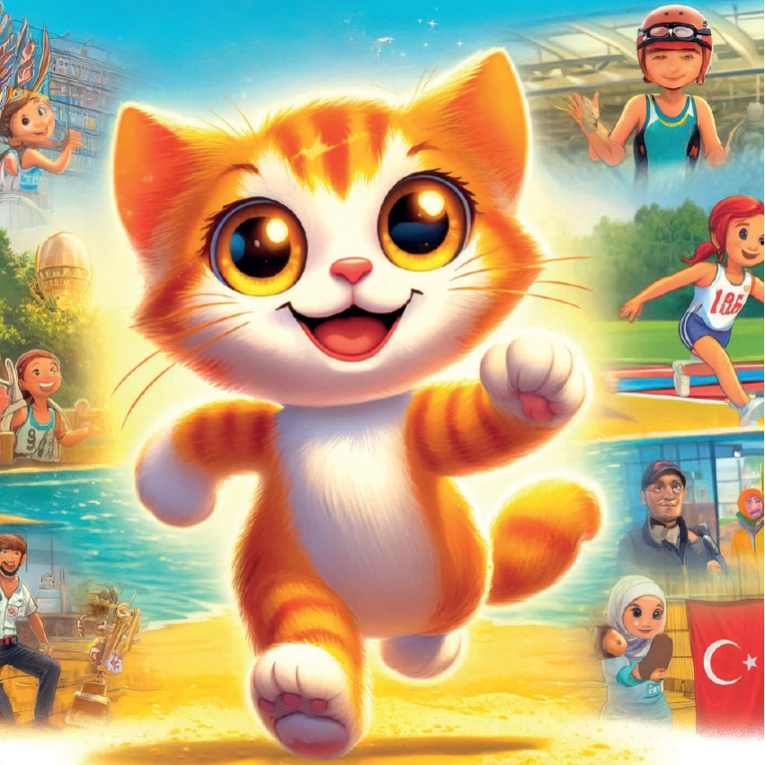
22